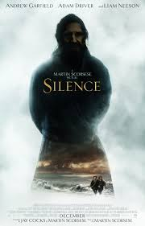
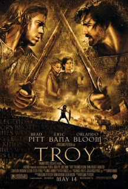
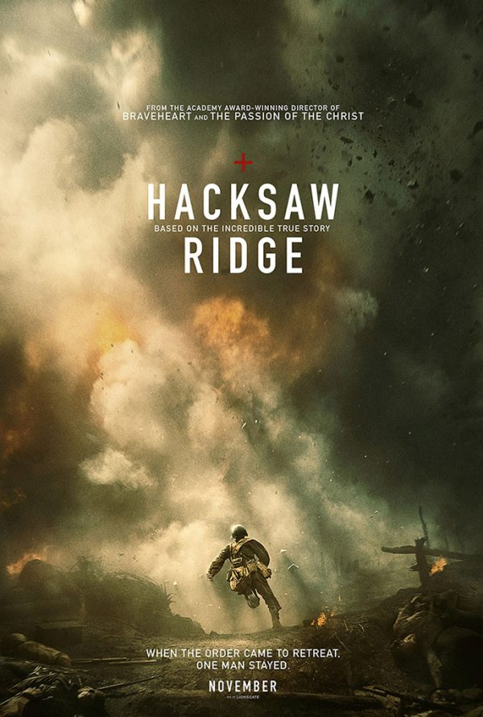
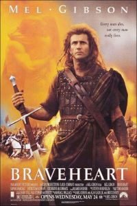
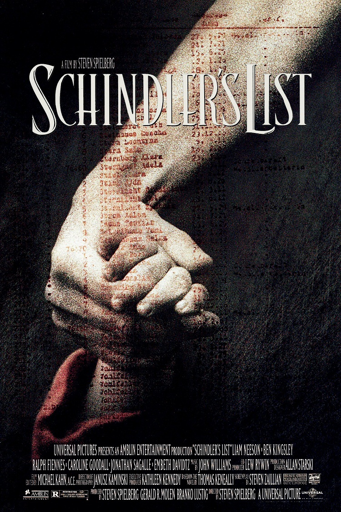

5.1: Hidden Figures

Ratings : 🌟 7.8
Genre :ActionHistory
Release Date : December 10, 2016
Watch-Time : 42min.
Director : Theodore Melfi
Starring : Taraji P. Henson, Octavia Spencer, Janelle Monáe, Kevin Costner, Kirsten Dunst, Jim Parsons
Box-Office : $236 million
Storyline:
As the United States raced against Russia to put a man in space, NASA found untapped talent in a group of African-American female mathematicians that served as the brains behind one of the greatest operations in U.S. history. Based on the unbelievably true life stories of three of these women, known as "human computers", we follow these women as they quickly rose the ranks of NASA alongside many of history's greatest minds specifically tasked with calculating the momentous launch of astronaut John Glenn into orbit, and guaranteeing his safe return. Dorothy Vaughan, Mary Jackson, and Katherine Gobels Johnson crossed all gender, race, and professional lines while their brilliance and desire to dream big, beyond anything ever accomplished before by the human race, firmly cemented them in U.S. history as true American heroes.
5.2: Silence
Ratings : 🌟 7.2
Genre : HistoryDrama
Release Date : 13 January 2017
Watch-Time : 2h 41min.
Director : Martin Scorsese
Starring : Andrew Garfield, Adam Driver, Tadanobu Asano, Ciarán Hinds, Liam Neeson
Box-Office : $23.8 million
Storyline:
Intent on investigating the truth behind Father Cristovão Ferreira's abrupt end of correspondence, the devout Portuguese Catholic priests, Sebastião Rodrigues and Francisco Garupe, set off to Japan, in 1633. In great disbelief, as the rumours of Ferreira's apostasy still echo in their minds, the zealous Jesuit missionaries try to locate their mentor, amid the bloodshed of the violent anti-Christian purges. Under those circumstances, the two men and the Japanese guide, Kichijiro, arrive in Japan, only to witness firsthand the unbearable burden of those who have a different belief in a land founded on tradition. Now--as the powerful Grand Inquisitor, Inoue, performs hideous tortures on the brave Japanese Christians--Father Rodrigues will soon have to put his faith to the ultimate test: renounce it in exchange for the prisoners' lives. There, in the ends of the world, a subtle change has begun; however, why is God's silence so deafening?
4.1: Troy
Ratings : 🌟 7.3
Genre : DramaHistory
Release Date : 14 May 2004
Watch-Time : 2h 43min.
Director : Wolfgang Petersen
Starring : Brad Pitt, Eric Bana, Orlando Bloom, Diane Kruger, Brian Cox, Sean Bean, Brendan Gleeson, Peter O'Toole
Box-Office : $497.4 million
Storyline:
It is the year 1250 B.C. during the late Bronze age. Two emerging nations begin to clash after Paris, the Trojan prince, convinces Helen, Queen of Sparta, to leave her husband, Menelaus, and sail with him back to Troy. After Menelaus finds out that his wife was taken by the Trojans, he asks his brother Agamemnon to help him get her back. Agamemnon sees this as an opportunity for power. So they set off with 1,000 ships holding 50,000 Greeks to Troy. With the help of Achilles, the Greeks are able to fight the never before defeated Trojans. But they come to a stop by Hector, Prince of Troy. The whole movie shows their battle struggles and the foreshadowing of fate in this adaptation of Homer's classic "The Iliad."
4.2: Dunkirk
Ratings : 🌟 7.8
Genre : ActionHistoryDrama
Release Date : 21 July 2017
Watch-Time : 1h 46min.
Director : Christopher Nolan
Starring : Fionn Whitehead, Tom Glynn-Carney, Jack Lowden, Harry Styles, Aneurin Barnard, James D'Arcy, Barry Keoghan, Kenneth Branagh, Cillian Murphy, Mark Rylance, Tom Hardy
Box-Office : $526.9 million
Storyline:
May/June 1940. Four hundred thousand British and French soldiers are hole up in the French port town of Dunkirk. The only way out is via sea, and the Germans have air superiority, bombing the British soldiers and ships without much opposition. The situation looks dire and, in desperation, Britain sends civilian boats in addition to its hard-pressed Navy to try to evacuate the beleaguered forces. This is that story, seen through the eyes of a soldier amongst those trapped forces, two Royal Air Force fighter pilots, and a group of civilians on their boat, part of the evacuation fleet.
3.1: Hacksaw Ridge
Ratings : 🌟 8.1
Genre : BiographyDramaHistory
Release Date : 4 November 2016
Watch-Time : 2h 19min.
Director : Mel Gibson
Starring : Andrew Garfield, Sam Worthington, Luke Bracey, Teresa Palmer, Hugo Weaving, Rachel Griffiths, Vince Vaughn
Box-Office : $180.4 million
Storyline:
The true story of Desmond T. Doss, the conscientious objector who, at the Battle of Okinawa, was awarded the Medal of Honor for his incredible bravery and regard for his fellow soldiers. We see his upbringing and how this shaped his views, especially his religious view and anti-killing stance. We see Doss's trials and tribulations after enlisting in the US Army and trying to become a medic. Finally, we see the hell on Earth that was Hacksaw Ridge.
3.2: Braveheart
Ratings : 🌟 8.3
Genre : BiographyDramaHistory
Release Date : 24 May 1995
Watch-Time : 2h 58mi .
Director : Mel Gibson
Starring : Mel Gibson, Sophie Marceau, Patrick McGoohan, Catherine McCormack
Box-Office : $213.2 million
Storyline:
William Wallace is a Scottish rebel who leads an uprising against the cruel English ruler Edward the Longshanks, who wishes to inherit the crown of Scotland for himself. When he was a young boy, William Wallace's father and brother, along with many others, lost their lives trying to free Scotland. Once he loses another of his loved ones, William Wallace begins his long quest to make Scotland free once and for all, along with the assistance of Robert the Bruce.
2.1: Gladiator

Ratings : 🌟 8.5
Genre : ActionAdventureHistory
Release Date : 5 May 2000
Watch-Time : 2h 35min.
Director : Ridley Scott
Starring : Russell Crowe, Joaquin Phoenix, Connie Nielsen, Oliver Reed, Derek Jacobi, Djimon Hounsou, Richard Harris
Box-Office : $375.4 million
Storyline:
Maximus is a powerful Roman general, loved by the people and the aging Emperor, Marcus Aurelius. Before his death, the Emperor chooses Maximus to be his heir over his own son, Commodus, and a power struggle leaves Maximus and his family condemned to death. The powerful general is unable to save his family, and his loss of will allows him to get captured and put into the Gladiator games until he dies. The only desire that fuels him now is the chance to rise to the top so that he will be able to look into the eyes of the man who will feel his revenge.
2.2: Greyhound

Ratings : 🌟 7.1
Genre : ActionDramaHistory
Release Date : 10 July 2020
Watch-Time : 1h 31min.
Director : Aaron Schneider
Starring : Tom Hanks, Stephen Graham, Rob Morgan, Elisabeth Shue
Box-Office : $50.3 million
Storyline:
Based upon the novel "The Good Shepherd" by C S Forester, this is the thrilling story of an Allied convoy crossing the North Atlantic in 1942 as it faces relentless attack by a German submarine wolf pack. The leader of the convoy's destroyer screen is a US Navy commander making his first Atlantic crossing. The story focuses on the his command responsibility as he fights the cold, the relentless night, the brutal sea, and his deep fatigue as he chases down the attacking submarines in the deadly game of cat and mouse. The exciting story, a thrilling ride-along with the beleaguered captain, so deeply portrays the elements of battle command that for a long period of time the book was used as a text at the US Naval Academy.
1.1: Hamilton

Ratings : 🌟 8.6
Genre : BiographyDramaHistory
Release Date : 3 July 2020
Watch-Time : 2h 40min.
Director : Thomas Kail
Starring : Daveed Diggs, Renée Elise Goldsberry, Jonathan Groff, Christopher Jackson, Jasmine Cephas Jones, Lin-Manuel Miranda, Leslie Odom Jr., Okieriete Onaodowan, Anthony Ramos, Phillipa Soo
Storyline:
"Hamilton" is the story of America then, told by America now. Featuring a score that blends hip-hop, jazz, R&B, and show tunes, "Hamilton" has taken the story of American founding father Alexander Hamilton and created a revolutionary moment in theater--a musical that has had a profound impact on culture, politics, and education. Captured at the Richard Rodgers Theater on Broadway in June 2016, the film transports its audience into the world of the Broadway show in a uniquely intimate way.
1.2: Schindler's List
Ratings : 🌟 8.9
Genre : BiographyDramaHistory
Release Date : 4 February 1994
Watch-Time : 3h 15min.
Director : Steven Spielberg
Starring : Liam Neeson, Ben Kingsley, Ralph Fiennes, Caroline Goodall, Jonathan Sagall, Embeth Davidtz
Box-Office : $321.3 million
Storyline:
Oskar Schindler is a vain and greedy German businessman who becomes an unlikely humanitarian amid the barbaric German Nazi reign when he feels compelled to turn his factory into a refuge for Jews. Based on the true story of Oskar Schindler who managed to save about 1100 Jews from being gassed at the Auschwitz concentration camp, it is a testament to the good in all of us.